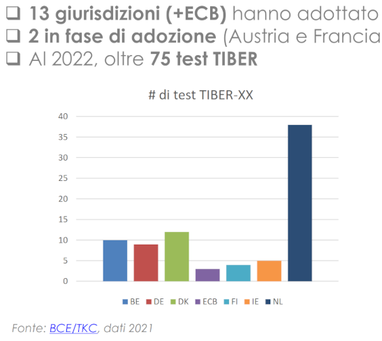
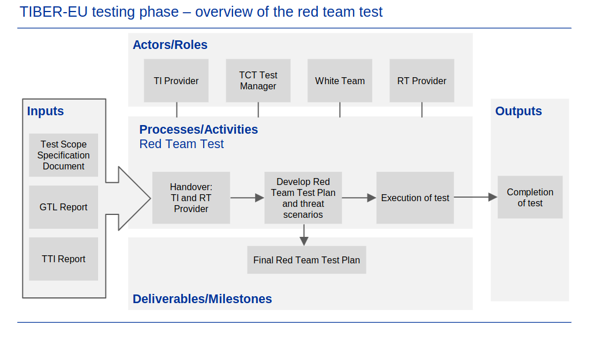

[PL] TIBER-EU i DORA szansą na budowanie realnej cyberodporności w sektorze finansowym
Prawodawstwo unijne w ostatnich latach jest coraz bardziej aktywne w kwestiach związanych z szeroko pojętym cyberbezpieczeństwem. Komisja Europejska bez wątpienia dostrzega problematykę braku odpowiedniego ogólnego poziomu cyberbezpieczeństwa w państwach członkowskich i aktywnie działa na rzecz poprawy sytuacji. Wystarczy wspomnieć tu o The EU Cybersecurity Act, czy od dawna już obowiązującą dyrektywę NIS (ang. Directive on Security of Network and Information Systems), która weszła w życie w 2016 roku, a na grunt krajowego porządku prawnego została wprowadzona jako Krajowy System Cyberbezpieczeństwa (KSC) w 2018 roku. W tym roku czeka nas również aktualizacja KSC o unijną dyrektywę NIS 2. Odpowiedni projekt ustawy trafił ostatnio do konsultacji publicznych.
W naszej ocenie za jeszcze istotniejsze należy uznać rozporządzenie Parlamentu Europejskiego z dnia 14 Grudnia 2022 roku o akronimie DORA (ang. Digital Operational Resilience Act), a w szczególności obszar rozporządzenia dotyczący testowania operacyjnej odporności cyfrowej (ang. Digital operational resilience testing). DORA zacznie obowiązywać od 17 stycznia 2025 roku, zaś czwartego marca tego roku zakończył się etap konsultacji publicznych drugiego pakietu aktów wykonawczych do tego rozporządzenia - na siedemnastego lipca zaplanowana jest ich oficjalna publikacja. Poznamy wtedy docelową i pełną treść aktu wykonawczego zatytuowanego “RTS on threat-led penetration testing (TLPT)”, ale już teraz mamy wgląd w wersję roboczą tego dokumentu. W dalszej części przeanalizujemy jego treść, która (mamy nadzieję) pozwoli uzmysłowić sobie jak innowacyjny i przydatny instrument z punktu widzenia podnoszenia cyberodporności DORA wprowadza do porządku prawnego. Najpierw jednak omówimy jeszcze jeden akronim, na którym testy typu TLPT zostały w dużej mierze oparte, mianowicie: TIBER-EU.
TIBER-EU (ang. European framework for Threat Intelligence-based Ethical Red Teaming) został zaproponowany w 2018 roku przez Europejski Bank Centralny w celu usystematyzowania i ujednolicenia podejścia i realizacji realistycznych testów penetracyjnych w organizacjach z sektora finansowego państw członkowskich UE. Dokument ten przedstawia model testów/operacji red team’owych poprzedzonych przeprowadzeniem rozpoznania i analizy danych na temat zagrożeń ukierunkowanych w testowny podmiot (ang. threat intelligence). Warto tu nadmienić, iż protoplastą dla tego typu testów jest model CBEST Threat Intelligence-Led Assessments wprowadzony przez centralny bank Wielkiej Brytanii (ang. Bank of England).
Model TIBER-EU stawia na maksymalny realizm przeprowadzanych testów dlatego prócz uwzględnienia zgromadzonych danych wywiadowczych na temat cyberzagrożeń mogących mieć istotny wpływ na badany podmiot, cechuje on się następującymi właściwościami:
- Zakres testów danej organizacji powinien dotyczyć kluczowych funkcjonalności biznesowych - CF (ang. critical functions), których zakłócenie może mieć istotny negatywny wpływ na stabilność działalności podmiotu lub szerzej całego sektora finansowego danego państwa lub wręcz całej Unii. Przy czym funkcje krytyczne potraktowane są szeroko i dotyczą technologii, ludzi i procesów (ang. TPP) zapewniających/utrzymujących daną funkcjonalność.
- Testy przeprowadzane są w stosunkowo długim horyzoncie czasowym, dokument rekomenduje żeby faza pozyskiwania danych wywiadowczych (ang. threat inteligence phase) trwała nie mniej niż 5 tygodni, zaś faza samego testowania (ang. red teaming phase) trwała pomiędzy 10 - 12 tygodni. Oczywiście i tak jest to prawdopodobnie tylko wycinek czasu jaki realni adwersarze potrzebują na rozpracowanie i atak na duże i złożone instytucje finansowe; jakkolwiek razem z rekomendacją zawartą w dokumencie, żeby testy były testami tzw. gray-box (a więc z założeniem iż testujący posiada nie zerową wiedzę początkową na temat CFów i wspierających je systemów) oraz z zaproponowanym mechanizmem, tzw. “asysty” (ang. leg-ups); taki horyzont czasowy wydaje się rozsądny.
- Podmiot poddawany testowaniu, za wyjątkiem małego zespołu koordynującego tzw. “White Team”, nie jest powiadomiony o planowanych i realizowanych testach. Podejście takie pozwala przesunąć ciężar “obrony” z samej tylko prewencji na wykrywanie i odpowiednią reakcję na pojawiające się ataki czy incydenty.
- Testom poddawane są systemy IT w wersji produkcyjnej - te które wspierają krytyczne funkcjonalności (CFs) danego podmiotu.
- TIBER-EU dopuszcza pełne spektrum ataków: od klasycznych cyberataków, po socjotechnikę i elementy wtargnieć fizycznych (np. w celu rozmieszczenia implantów sprzętowych).
Jak już wspomniano dokument TIBER-EU przedstawia ogólny model przeprowadzania testów typu threat-led penetration testing w państwach członkowskich UE. Szczegółowa implementacja i doprecyzowanie kwestii, o których dokument nie wspomina lub pozostawia jako opcjonalne (np. kwestia przeprowadzania uogólnionej fazy analizy zagrożeń dla sektora finansowego tzw. Generic Threat Intelligence) pozostają w gestii poszczególnych państw członkowskich. Na dzień dzisiejszy, następujące państwa UE zaadoptowały model TIBER-EU:
- Austria (TIBER-AT)
- Belgia (TIBER-BE)
- Dania (TIBER-DK)
- Finlandia (TIBER-FI)
- Francja (TIBER-FR)
- Niemcy (TIBER-DE)
- Islandia (TIBER-IS)
- Irlandia (TIBER-IE)
- Włochy (TIBER-IT)
- Luksemburg (TIBER-LU)
- Holandia (TIBER-NL)
- Norwegia (TIBER-NO)
- Portugalia (TIBER-PT)
- Rumunia (TIBER-RO)
- Hiszpania (TIBER-ES)
- Szwecja (TIBER-SE)
Niestety, aktualnie zainteresowanie tego typu testami jest w naszej opinii niewystarczające. Według Europejskiego Banku Centralnego do Stycznia 2023 roku zostało przeprowadzonych około stu testów modelu TIBER-EU. Z kolei w jednej z prezentacji na temat TIBER-IT znaleźć można wykres z rozkładem przeprowadzonych testów na poszczególne państwa (stan na 2021 rok):
 |
|---|
| Źródło: Prezentacja na temat TIBER-IT (https://www.bancaditalia.it/compiti/sispaga-mercati/tiber-it/Convegno_TIBER-IT_20221013.pdf) |
Dopiero DORA ma realne szanse przyczynić się do popularyzacji i wykorzystania na szerszą skalę wykonywania testów w modelu TIBER-EU, a to ze względu na wymóg przeprowadzania cyklicznych testów tego typu, zapisany wprost w rozporządzeniu DORA oraz jawnym powołaniu się w nim na model TIBER-EU.
Czym różnią się omawiane testy od bardziej klasycznych testów penetracyjnych i jak wygląda przebieg takich testów? Testy typu threat-led penetration testing podzielone zostały na cztery ogólne fazy (w tym jedna opcjonalna):
- [Opcjonalnie] Faza rozpoznania i analizy aktualnego stanu zagrożeń dla sektora finansowego (ang. Generic Threat Landscape - GTL) w danej jurysdykcji (tj. państwie członkowskim UE),
- Faza przygotowawcza (ang. Preparation Phase),
- Faza testów, podzielona na dwie części:
- Rozpoznanie i analiza zagrożeń ukierunkowanych na testowany podmiot (ang. Targeted Threat Intelligence - TTI),
- Przeprowadzenie testów / operacji typu red team (ang. Red Teaming - RT),
- Faza zamknięcia (ang. Closure Phase).
W całym procesie zaangażowane są następujące zespoły i/lub podmioty:
- Zespół koordynacyjny testowanego podmiotu (ang. White Team - WT),
- Zespół cyberbezpieczeństwa TIBER (ang. TIBER Cybersecurity Team - TCT),
- Dostawca usług testów penetracyjnych / usług red teaming’owych (ang. Red Teaming provider - RT),
- Dostawca usług rozpoznania, analizy i modelowania zagrożeń (ang. Threat Intelligence provider - TI),
- Pozostali (tj. nie wchodzący w skład WT) pracownicy podmiotu testowanego (ang. Blue Team - BT),
- [Opcjonalnie] krajowa agencja wywiadu łączności/informacji (ang. governmental intelligence agency / national cyber security centre),
- TIBER-EU Knowledge Centre wchodzące w skład Europejskiego Banku Centralnego.
Faza rozpoznania i analizy aktualnego stanu zagrożeń
Podczas fazy GTL (gdy jest wykonywana) przeprowadzane jest rozpoznanie i analiza ogólnego stanu zagrożeń dla sektora finansowego w danym państwie członkowskim. Model TIBER-EU nie narzuca w żaden sposób kto (i czy wogóle) ma przeprowadzić taką analizę i przygotować z niej raport. Zaleca jedynie, żeby raport taki został przygotowany na zasadzie konsensusu przez szersze grono podmiotów sektora finansowego, tak aby przedstawiał możliwie szeroki i realistyczny pogląd na aktualny stan zagrożeń dla tego sektora gospodarki. I tak, różne implementacje modelu TIBER-EU na poziomie krajowym, przyjęły nieco odmienne podejścia do przygotowania raportu GTL:
- W przypadku większości państw skandynawskich (Norwegia, Finlandia, Islandia) Nordic Financial CERT opracowuje i przygotowuje raport GTL.
- W Szwecji przygotowanie raportu GTL jest wymaganiem - nie opcją. Jest on przygotowywany przez państwowy bank centralny (Riksbank).
- Niderlandy opracowują swój raport GTL siłami TCT. O ile to możliwe jest on recenzowany przez następujące agencje rządowe: The General Intelligence Agency (AIVD), the Military Intelligence Agency (MIVD), Team High Tech Crime of the Dutch National Police i National Cyber Security Centre.
- TIBER-LU (Luksemburg) nie wskazuje podmiotu odpowiedzialnego za przygotowanie raportu GTL i pozostawia ten krok opcjonalny.
- W Irlandii i Portugalii banki centralne na dzień dzisiejszy nie przygotowują takiego raportu, ale nie wykluczają takiej możliwości w przyszłości.
- W Hiszpanii przygotowanie raportu GTL jest opcjonalne i leży w gestii TCT.
- W Rumunii raport GTL nie jest przygotowywany.
- We Francji za przygotowanie raportu odpowiedzialna jest ANSSI (French National Cyber Security Agency).
- W Belgii (TIBER-BE) do opracowania raportu GTL wynajęta zostaje zewnętrzna firma.
- W Danii raport przygotowuje Nordic Financial CERT zaopiniowany przez Centre for Cyber Security.
- W Niemczech i Austrii raporty GTL przygotowywane są przez banki centralne tych państw.
Jak widać z powyższego wyróżnić można następujące trendy w podejściu do przygotowywania raportu GTL:
- wykonanie raportu przez zespół TCT (Niderlandy)
- wykonanie raportu przez bank centralny danego kraju (Szwecja, Niemcy, Austria)
- zlecenie wykonania raportu do CERTu (Norwegia, Finlandia, Islandia, Dania)
- zlecenie wykonania raportu firmie zewnętrznej (Belgia)
- wykonanie raportu przez wyspecializowaną agencję rządową (Francja)
- brak przygotowywania takiego raportu (Luksemburg, Irlandia, Hiszpania, Rumunia)
Na dzień dzisiejszy brak informacji jak do kwestii opracowywania raportu GTL podejdzie Polska.
Faza przygotowań
Typowo, faza przygotowań rozpoczyna się od wstępnego spotkania (ang. pre-launch meeting) pomiędzy menadżerem z zespołu TCT przydzielonego do koordynacji danego testu TIBER-EU, a kierownikiem zespołu WT, testowanego podmiotu. Na tym etapie projektu, podmiot testowany może mieć nadal mgliste pojęcie na temat modelu TIBER-EU, dlatego menadżer z TCT powinień przede wszsytkim zapoznać kierownika zespołu WT oraz innych uczestników spotkania (jeśli są obecni) o procesie przeprowadzania tego typu testów w danym kraju członkowskim. Podczas spotkania, dyskutowane są także takie kwestie jak:
- wyłaniany jest skład zespołu WT (według wytycznych przedstawionych w dokumencie TIBER-EU: White Team Guidance,
- przydzielane są role i obszary odpowiedzialności w projekcie,
- ustalany jest bezpieczny protokół komunikacji oraz wymainy dokumentów pomiędzy zaangażowanymi stronami,
- ustalane są zasady na których zawierane będą kontrakty z dostawcami TI/RT.
Pozostałe, kluczowe czynności wykonywane podczas fazy przygotowań:
Zaangażowanie/zakontraktowanie do projektu (na zasadach ustalonych na spotkaniu wstępnym) zewnętrznych dostawców usługi: rozpoznawania, analizy i modelowania zagrożeń (ang. Threat Intelligence) oraz usługi: przeprowadzenia testów red teaming’owych. Według wytycznych omówionych w dokumencie TIBER-EU: Services Procurement Guidelines.
Ustalenie i uzgodnienie szczegółowego zakresu testów (TIBER-EU: Scope Specification Template), a także zakomunikowanie i objaśnienie dostawcom TI/RT otoczenia biznesowego, w którym testowany podmiot funkcjonuje. Warto tu zaznaczyć, iż zakres testów wykonywanych w modelu TIBER-EU zawierać powinien:
- listę krytycznych funkcjonalności (ang. Critical Functions - CFs) podmiotu poddawanego testom. Gdzie CF Zdefiniowany został jako: “the people, processes and technologies required by the entity to deliver a core service which, if disrupted, could have a detrimental impact on financial stability, the entity’s safety and soundness, the entity’s customer base or the entity’s market conduct”. W szczególności, odnotować należy że CF nie jest tożsamy z systemem IT.
- kluczowe systemy i serwisy wspierające poszczególne CFs.
- tzw. “flagi” (ang. flags), które TIBER-EU definiuje jako: targets or objectives, that the RT provider aims to meet during the test".
- dodatkowo, TIBER-NO proponuje w (TIBER-NO: Scope Specification template), aby zamieszczać tam (wcześniej już wspomniane) tzw. asysty (ang. leg-ups), a więc czynności/środki zaradcze, które może zaproponować WT zespołowi RT podczas wykonywania testu, gdy ten nie jest już w stanie kontynuować testów i zdobyć kolejnej “flagi” (na przykład z powodu zbyt skutecznej obrony prowadzonej przez zespół BT) bądź w celu zaoszczędzenia czasu. Przykładem takiej asysty może być nadanie dostępu do określonego systemu lub podsieci.
Niezmiernie ważną kwestią do zaadresowania jest także przeanalizowanie i odpowiednie minimalizowanie ryzyk związanych z przeprowadzaniem testów w modelu TIBER-EU, tym bardziej, że jak już wspomniano powyżej poddawane testom funkcjonalności są kluczowe z punktu widzenia działalności testowanego podmiotu. W tej kwestii warto dodatkowo zapoznać się z publikacją jaką centralny bank Norwegii przygotował na potrzeby swojej jurysdykcji TIBER-NO: Risk Management Guidance.
Następnie - już w pełnym gronie: przedstawiciel TCT, zespół WT, dostawcy usług TI/RT - organizowane jest spotkanie (ang. launch meeting) wyznaczające oficjalny start testu TIBER-EU, podczas którego strony dyskutują proces przeprowadzenia testu oraz, pod przewodnictwem WT przygotowują wstępną wersję planu całego przedsięwzięcia (ang. the draft TIBER-EU Project Plan).
Faza testów: analiza i modelowanie zagrożeń
Właściwa faza testów rozpoczęta zostaje przez dostawcę usług TI (ang. Threat Intelligence provider), a jego głównym zadaniem jest przygotowanie realistycznych i prawdopodobnych scenariuszy zagrożeń dotyczących testowanego podmiotu, a następnie sporządzenie raportu (ang. Targeted Threat Intelligence / TTI Report) ze swoich prac. Scenariusze zagrożeń powinny być poparte danymi z rozpoznania i analizy zagrożeń oraz dotyczyć realnych adwersarzy i ataków jakie mogliby oni przeprowadzić na badany podmiot. Opracowany raport stanowić będzie bazę dla zespołu RT do przygotowania bardziej szczegółowych planów testów red team’owych (ang. Red Team Test Plan).
Ogólna charakterystka tego etapu prac według modelu TIBER-EU:
- Za punkt wyjścia do prac analitycznych, dostawca usług TI przyjąć powinien raport GTL (o ile był przygotowywany i jest dostępny).
- DORA zakłada, iż powinny być przygotowane przynajmniej 3 scenariusze zagrożeń.
- Opracowywane scenariusze opierane są na: dostępnej wiedzy na temat rzeczywistych adwersarzy; ogólnodostępnych informacji pozyskanych na temat testowanego podmiotu (OSINT); częściowej wiedzy na temat CFs testowanego podmiotu.
- Na tę fazę przeznaczone jest około pięciu tygodni prac.
- Podczas prac zakłada się, iż analitycy z zespołu TI mają dostęp (przynajmniej częściowy) do wiedzy na temat CFs testowanej organizacji, jej wyników z analizy ryzyka czy ostatnio obsłużonych przypadków ataków. Podejście takie, ma na celu skompensowanie faktu, iż realni adwersarze mają do dyspozycji znacznie więcej czasu na przygotowanie ataku; a także nie ograniczają ich regulacje prawne anie zasady etyczne.
- TIBER-EU nie narzuca żadnego konkretnego formatu raportu TTI, podkreśla jedynie iż raport ten powinien być przede wszsytkim przydatny dla zespołu RT, który to na jego bazie przygotowywać będzie szczegółowe plany testów/ataków.
- Wraz ze zbliżaniem się do konća prac nad raportem TTI, zespół RT jest proszony o zrecenzowanie, zaopiniowanie oraz ewentualnie zgłoszenie swoich uwag do raportu.
- Przydatnym w opracowywaniu raportu TTI może okazać się krótki poradnik: TIBER-NO Targeted Threat Intelligence Report Guidance, a także wiedza i doświadczenie w opracowywaniu modeli zagrożeń dla różnego typu systemów.
Faza testów: red teaming
Po sporządzeniu i zaakceptowaniu raportu TTI, zespół RT przystępuje do fazy planowania i przeprowadzenia testów red team’owych. Model TIBER-EU przewiduje około 10 - 12 tygodni na tę fazę, jednak dokładny czas trwania zależny jest oczywiście od złożoności testowanych funkcjonalności (CFs) jak i wspierających je systemów i/lub procesów. Całkowity przedział czasowy testów powinien być tak dobrany, aby zespoł RT był w stanie ukończyć wszystkie zaplanowane fazy ataku oraz osiągnąć/zdobyć wszystkie ustalone “flagi”. Poglądowy diagram przebiegu tej fazy widnieje poniżej.
 |
|---|
| Źródło: TIBER-EU Framework (https://www.ecb.europa.eu/pub/pdf/other/ecb.tiber_eu_framework.en.pdf) |
Tę część projektu rozpoczyna spotkanie podczas, którego zespół TI formalnie przekazuje oraz omawia finalną wersję raportu TTI zespołowi testowemu. Od tego momentu rolę wiodącą w projekcie przejmuje zespół RT i rozpoczyna swoje prace nad planem testów.
Podczas prac planistycznych zespół RT powinien przygotować/opracować poniższe informacje organizacyjne:
- Nadać odpowiedni kryptonim (ang. codename) podmiotowi testowanemu oraz przygotować wytyczne na temat posługiwania się nim w celu zachowania w tajemnicy prawdziwej nazwy podmiotu oraz faktu przeprowadzania testów;
- Plan projektowy (ang. project plan) przedstawiający rozplanowanie w czasie poszczególnych scenariuszy wybranych do rozegrania;
- Skład i biogramy członków zespołu testowego, a także przydzielone role;
- Protokół komunikacji pomiędzy uczestnikami projektu powinien być jasno zdefinowany i zakomunikowany; w szczególności wdrożone powinny być takie kwestie jak: bezpieczny kanał komunikacji, sposób i częstotliwość raportowania do WT i TCT, eskalacja sytuacji nadzwyczajnych;
- Zarządzanie i minimalizacja ryzyka wynikającego z przeprowadzania testów: ustalone zasady zachowania (ang. Rules of Engagement), “wyjście” spoza zakresu testów, logowanie i audyt w trakcie trwania testów, itp;
- wytyczne związane ze stosowaniem tzw. “asysty” (ang. leg-ups).
Plany testów zawierać powinny, także drobiazgowy opis poszczególnych scenariuszy ataków jakie będą realizowane podczas testów. Każdy scenariusz powinien zawierać takie informacje jak:
- Wyraźne nawiązanie do do potencjalnych adwersarzy oraz zagrożeń z nimi związanych przedstawionych w raporcie TTI;
- Cele jakie adwersarz zamierza osiągnąć atakując konkretne CFs i powiązane z nimi systemy;
- Motywacja, możliwości i sposoby działania przeciwnika;
- Proponowany przebieg ścieżek ataku (w postaci diagramu/grafu) dążących do zdobycia poszczególnych “flag”;
- Możliwe “asysty” (ang. leg-ups) dostępne w danym scenariuszu;
- Bazowe modus operandi / TTP (ang. tactics, techniques and procedures) zaplanowane do zastosowania. Przyjęty sposób działania powinien w sposób możliwie wierny odwzorowywać TTP symulowanego adwersarza, oraz być opisany w oparciu o nomenklaturę z MITRE ATT&CK.
Podczas realizacji testów, zespół RT ma za zadanie zrealizować wszystkie zaplanowane scenariusze ataków. Poszczególne czynności prowadzące do zdobycia “flag” powinny być na bieżąco dokumentowane, a zespół WT (i opcjonalnie TCT) powinien być regularnie powiadamiany o kolejnych wykonywanych krokach, progresie (lub jego braku), potrzebie “asysty”, a także wszelkich innych aspektach, które mogłyby wpłynąć na całokształt przedsięwzięcia.
Należy, także zaznaczyć że przeprowadzanie testów red teaming’owych jest przedsięwzięciem twórczym, wymagającym pewnej dozy elastyczności i adaptacji do napotkanej sytuacji. Dlatego też o ile, zespół RT powinien bezwzględnie dążyć do osiągnięcia ustalonych wcześniej celów i “flag” opracowanych dla danego scenariusza, to metody i sposoby działania (TTPs) przyjęte przez zespół RT nie muszą zawsze w 100% odwzorowywać TTPs stosowanych przez adwersarza, który jest symulowany.
Faza zamknięcia
Ostatnim etapem całego przedsięwzięcia jest faza zamknięcia. Podczas tej fazy uczestnicy podsumowują swoją dotchyczasową działalność, analizują przebieg poszczególnych faz oraz aktywności. Planują prace naprawcze oraz inne adekwatne do rezultatów inicjatywy. W szczególności, wykonywane są następujące kroki:
- Zespół RT przygotowuje wstępną wersję raportu z testów gdzie przedstawia zastosowane podejście, kluczowe momenty testów, obserwacje poczynione podczas przebiegu testów oraz zidentyfikowane słabości. Dokument TIBER-EU wymaga, aby raport taki został dostarczony podmiotowi testowanemu oraz TCT w ciągu dwóch tygodni od zakończenia testów.
- Kluczowi członkowie zespołu BT powiadomieni zostają o przeprowadzonym teście i na podstawie raportu przygotowanego przez zespół RT, przygotowują własny (ang. Blue Team Report), opatrując odpowiednim komentarzem kluczowe momentu testów/ataków, wykrycia (lub ich brak) aktywności adwersarzy, sposób reakcji, podjęte czynności i inne. TIBER-EU nie opublikował tu żadnych wytycznych na temat formy i zawartości takiego raportu, ale pewną inspiracją może tu być propozycja jaka została przygotowana na potrzeby TIBER-NO: Blue Team Test Report Guidance.
- Po przygotowaniu raportów, zespoły RT i BT przeprowadzają wspólne warsztaty podczas, których obie strony odgrywają krok po kroku czynności podjęte podczas testów, oraz wspólnie analizują ich rezultaty. Ponadto zespół RT powinien podzielić się tu swoimi spostrzeżeniami na temat przebiegu całego cyklu ataku dla każdego z rozgrywanych scenariuszy: gdzie napotkał szczególne problemy, co poszło łatwo, co jeszcze było do osiągnięcia dysponując dodatkowym czasem i/lub zasobami.
- Opcjonalnie, przeprowadzane warsztaty mogą zostać rozszerzone o pogłębioną eksplorację możliwych działań zespołu RT i odpowiedzi/reakcji zespołu BT zgodnie z koncepcją tzw. Purple Teaming’u.
- Podczas spotkania podsumowującego (ang. 360-degree feedback meeting) zorganizowanego przez TCT, w składzie: testowany podmiot, zespoły RT i TI, TCT; wszystkie strony dyskutują całościowy przebieg testów oraz opiniują siebie nawzajem.
Po wykonaniu powyższych czynności, testowany podmiot zobowiązany jest przygotować dwa raporty:
Remedation Plan - raport oparty na rezultatach z testów, powinien zawierać plan zaadresowania wykrytch podatności i słabych punktów wraz z uzasadnieniem kontekstu biznesowego.
Test Summary Report - raport przygotowany w oparciu o poprzednio przygotowane dokumenty. Raport ten nie powinien zawierać żadnych szczegółów technicznych na temat zidentyfikowanych podatności, czy innych wrażliwych informacji. Dokument będzie przekazany do TCT. Wytyczne dotyczące przygotowania takiego raportu można znaleźć tutaj.
Ostatnim krokiem jest wystawienie podmiotowi testowanemu poświadczenia (ang. TIBER-EU Attestation) wykonania testu zgodnie z modelem TIBER-EU i wszelkimi standardami wykonywania tego typu testów. Dokument powinien być podpisany przez przedstawicieli zespołów: TCT, RT i TI.
Testy TLPT z DORA kontra TIBER-EU
Wracając do rozporządzenia DORA, a konkretniej do aktu wykonawczego zatytuowanego RTS on threat-led penetration testing (TLPT), przedstawimy teraz pokrótce główne zmiany względem TIBER-EU:
- DORA zmieniła nieco nazewnictwo, niektórych zespołów: control team zamiast white team; TLPT authority zamiast TCT.
- Warsztaty Purple Teaming’u w fazie zamknięcia stały się obligatoryjne (w TIBER-EU były opcjonalne).
- Inaczej niż w TIBER-EU, DORA nie wymaga aby w zespół RT wcielił się zewnętrzny dostawca. Innymi słowy DORA dopuszcza, aby testerzy byli pracownikami/kontraktorami podmiotu poddanego testom. Z zastrzeżeniem jedynie, że raz na trzy testy zaangażowany musi być zewnętrzny dostawca usług RT.
Gosia i Mariusz